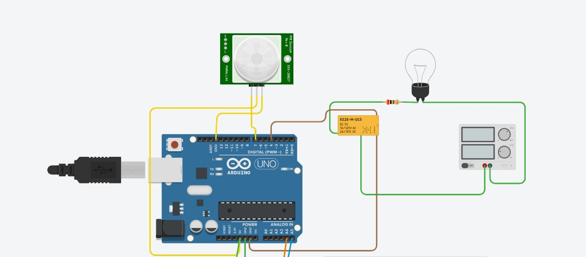

待機偵測顯示 "DECT..." ➔ 感應移動顯示 "Warning!" 並切換 NO 點燈 ➔ 離去延遲 5 秒倒數
本專案為 **Arduino Uno** 智慧人體感測與負載控制系統的**第三階段（Stage 3）**升級版本。在經過 Stage 1（阻塞式 delay(5000)）與 Stage 2（非阻塞式 millis() 狀態機）的洗禮後，本階段正式整合 **I2C LCD 1602（PCF8574 晶片，I2C 位址 0x20）**，為自動化開關加入視覺化人機介面（HMI）。
0x20，SDA 接 Arduino A4，SCL 接 Arduino A5。"PIR: DECT..."，第 2 行顯示 "Relay: NC (OFF)"，繼電器處於 NC 斷開，電燈熄滅。"PIR: Warning!"，第 2 行顯示 "Relay: NO (ON)"，繼電器切換至 NO，電燈開啟！Delay Off: 4s），滿 5 秒後切回待機 NC 狀態。
圖 1：Tinkercad Circuits 模擬接線（Parallax PIR 接 Pin 7，繼電器接 Pin 4，底部 A4/A5 橘藍導線連接 I2C LCD 1602 PCF8574 擴展板）
| 硬體模組 | 模組引腳 | Arduino Uno 腳位 | 電氣功能與動作機制 |
|---|---|---|---|
| PIR 紅外線人體感測器 (HC-SR501 / Parallax) |
VCC | 5V |
電源供電輸入 (DC 4.5V~20V) |
| GND | GND (頂部 Pin 13 旁) |
系統共地接地 | |
| OUT (Signal) | Pin 7 (INPUT) |
數位訊號輸出：移動為 HIGH，無人為 LOW |
|
| 電磁繼電器模組 (KS2E-M-DC5 / 5V Relay) |
IN / Coil (+) | Pin 4 (OUTPUT) |
線圈控制：HIGH 吸合切換至 NO，LOW 切回 NC |
| GND / Coil (-) | GND (底部電源排針) |
線圈接地 | |
| I2C LCD 1602 模組 (PCF8574 轉接板，位址 0x20) |
GND | GND |
模組電源接地 |
| VCC | 5V |
模組工作電源 (DC 5V) | |
| SDA | A4 (或專屬 SDA) |
I2C 串列資料線 (Serial Data) | |
| SCL | A5 (或專屬 SCL) |
I2C 串列時脈線 (Serial Clock) | |
| 受控照明回路 (獨立 DC 電源 + 負載) |
COM (Common) | 外部電源供應器正極 (+) | 電源輸入入口端 |
| NO (Normally Open) | 限流電阻 ➔ 燈泡正極 | 常開端：吸合時導通供電 | |
| 燈泡負極回流 | 外部電源供應器負極 (-) | 形成閉合工作回路 |
點擊下方按鈕可模擬人體走入感應區與離開，即時觀測虛擬 LCD 1602 螢幕上的 DECT... 與 Warning! 變化、繼電器 NC/NO 吸合與 5 秒倒數：
傳統 LCD 1602 需要佔用高達 6~10 根 GPIO（RS, EN, D4~D7 等）。透過 PCF8574 8-Bit 遠端 I/O 擴展晶片，將平行資料壓縮成 I2C 兩線式（SDA/SCL）序列通訊：
0x20？）：
PCF8574 的 7-bit 位址由 0100 與三位硬體引腳 A2, A1, A0 組成：
$$\text{Address} = [0, 1, 0, 0, A2, A1, A0]_2$$
當轉接板背面的 A0、A1、A2 焊點均接地（0）時，位址即為 0x20（若全部懸空拉高為 1 則為常見的 0x27）。本專案依需求指定以 0x20 驅動。
初學者最常見的錯誤是在 loop() 主迴圈中不斷呼叫 lcd.clear()，造成背光與點陣每秒被清空重繪數十次，產生嚴重的黑屏閃爍。本專案採用兩大工業防閃爍法則：
4s ➔ 3s），直接透過 lcd.setCursor(11, 1) 定位到該欄位覆蓋輸出數字，並以空格覆蓋多餘字元，絕不調用全域清屏！在撰寫程式前，以下流程圖展示整合 PIR、Relay 與 I2C LCD 的核心邏輯運作：
採用標準 LiquidCrystal_I2C 程式庫，I2C 位址明確指定為 0x20，SDA 接 A4、SCL 接 A5：
/**
* @file arduino_uno_pir7_relay4_lcd1602_i2c.ino
* @brief Arduino Uno PIR (Pin 7) 控制繼電器 (Pin 4) 與 I2C LCD 1602 (0x20) 狀態系統
* @details
* - PIR 監控待機時：LCD 顯示 "DECT..."，繼電器為 NC (關閉)
* - PIR 感測到物體移動時：LCD 顯示 "Warning!"，繼電器切換至 NO (導通開燈)
* - 人離開後：非阻塞離去延遲 5 秒，倒數結束後切回 NC
* - I2C LCD 位址：0x20 (PCF8574)，SDA 接 A4，SCL 接 A5
*/
#include <Wire.h>
#include <LiquidCrystal_I2C.h>
// ================= 硬體引腳定義 =================
const int PIR_PIN = 7; // PIR 感測器信號輸出 (OUT) 接 Pin 7
const int RELAY_PIN = 4; // 繼電器線圈控制輸入 (IN) 接 Pin 4
// ================= I2C LCD 1602 設定 =================
// 指定 I2C 位址為 0x20，螢幕規格為 16 欄 2 行
LiquidCrystal_I2C lcd(0x20, 16, 2);
// ================= 時間參數設定 =================
const unsigned long OFF_DELAY_TIME = 5000; // 人員離開後的延遲關閉時間 (5000ms = 5秒)
// ================= 系統全域變數 =================
unsigned long lastMotionTime = 0; // 記錄最後一次偵測到人體動態的時間戳記 (毫秒)
bool relayActive = false; // 繼電器狀態 (true: NO 開啟 / false: NC 關閉)
int lastPirState = LOW; // 前次 PIR 狀態 (用於狀態變化偵測)
int lastRemainSec = -1; // 前次倒數秒數 (用於防止 LCD 每一迴圈重複刷新)
void setup() {
// 啟用序列埠通訊，鮑率 9600
Serial.begin(9600);
Serial.println(F("=================================================="));
Serial.println(F("💡 Arduino Uno PIR + Relay + I2C LCD 1602 (0x20)"));
Serial.println(F("=================================================="));
// 設定引腳模式
pinMode(PIR_PIN, INPUT);
pinMode(RELAY_PIN, OUTPUT);
// 初始狀態配置：繼電器預設關閉 (LOW)，保持在 NC (常閉端)
digitalWrite(RELAY_PIN, LOW);
relayActive = false;
// 初始化 I2C LCD
lcd.init();
lcd.backlight(); // 開啟 LCD 背光
lcd.clear();
// 顯示開機初始歡迎畫面
lcd.setCursor(0, 0);
lcd.print("System Starting");
lcd.setCursor(0, 1);
lcd.print("Init I2C 0x20...");
delay(1500); // 開機短暫展示
// 進入預設監控待機狀態
lcd.clear();
lcd.setCursor(0, 0);
lcd.print("PIR: DECT... "); // 依需求顯示 "DECT..."
lcd.setCursor(0, 1);
lcd.print("Relay: NC (OFF) ");
Serial.println(F("[系統狀態] 系統就緒！LCD 顯示 DECT...，繼電器為 NC (Pin 4 = LOW)"));
}
void loop() {
unsigned long currentMillis = millis(); // 取得當前系統毫秒時間戳
int pirValue = digitalRead(PIR_PIN); // 讀取 Pin 7 PIR 訊號
// ----------- 1. 偵測事件變化 (輸出至 Serial Monitor) -----------
if (pirValue != lastPirState) {
if (pirValue == HIGH) {
Serial.println(F("\n[事件觸發] 🚨 偵測到物體移動！切換至 NO，LCD 顯示 Warning!"));
} else {
Serial.println(F("\n[事件觸發] 🍃 人員離開感應區，啟動 5 秒倒數，LCD 顯示 DECT..."));
}
lastPirState = pirValue;
}
// ----------- 2. 核心控制與非阻塞狀態機 -----------
if (pirValue == HIGH) {
// 【狀態 A：偵測到移動】
lastMotionTime = currentMillis; // 持續刷新動態時間
if (!relayActive) {
// 原處於 NC ──► 激磁吸合切換至 NO 端
digitalWrite(RELAY_PIN, HIGH);
relayActive = true;
// 更新 LCD 顯示為 Warning! 與 NO 導通 (定點覆蓋防閃爍)
lcd.setCursor(0, 0);
lcd.print("PIR: Warning! "); // 依需求顯示 "Warning!"
lcd.setCursor(0, 1);
lcd.print("Relay: NO (ON) ");
Serial.println(F("[動作執行] ⚡ Pin 4 = HIGH ➔ 繼電器切換至 NO ➔ 💡 燈泡開啟！"));
}
} else {
// 【狀態 B：人員離開 (Pin 7 = LOW)】
if (relayActive) {
unsigned long elapsedTime = currentMillis - lastMotionTime;
if (elapsedTime >= OFF_DELAY_TIME) {
// 已超過 5 秒延遲 ──► 釋放繼電器切換回 NC
digitalWrite(RELAY_PIN, LOW);
relayActive = false;
lastRemainSec = -1;
// 更新 LCD 回復待機監控畫面
lcd.setCursor(0, 0);
lcd.print("PIR: DECT... ");
lcd.setCursor(0, 1);
lcd.print("Relay: NC (OFF) ");
Serial.println(F("[動作執行] ⏰ 延遲 5 秒結束！Pin 4 = LOW ➔ 繼電器切回 NC ➔ 🌑 燈泡熄滅！"));
} else {
// 尚在 5 秒倒數中：第 1 行切回 DECT...，第 2 行定點顯示倒數秒數
int remainSec = (OFF_DELAY_TIME - elapsedTime + 999) / 1000;
// 只有秒數改變時才寫入 LCD，徹底消除畫面抖動
if (remainSec != lastRemainSec) {
lastRemainSec = remainSec;
lcd.setCursor(0, 0);
lcd.print("PIR: DECT... ");
lcd.setCursor(0, 1);
lcd.print("Delay Off: ");
lcd.print(remainSec);
lcd.print("s "); // 補空白清除舊字元
Serial.print(F("[倒數計時] 距離關閉剩餘: "));
Serial.print(remainSec);
Serial.println(F(" 秒..."));
}
}
}
}
delay(20); // 微幅延遲 20ms，降低 CPU 輪詢負載 (每秒約 50 次)
}若實體接線完成後 LCD 螢幕只有背光但無文字，建議先上傳 I2C Scanner 程式確認位址是否確實為 0x20：
#include <Wire.h>
void setup() {
Wire.begin();
Serial.begin(9600);
while (!Serial);
Serial.println(F("\n--- 開始掃描 I2C 設備 ---"));
}
void loop() {
byte error, address;
int nDevices = 0;
for (address = 1; address < 127; address++) {
Wire.beginTransmission(address);
error = Wire.endTransmission();
if (error == 0) {
Serial.print(F("✅ 找到 I2C 設備！位址: 0x"));
if (address < 16) Serial.print("0");
Serial.println(address, HEX);
nDevices++;
}
}
if (nDevices == 0) Serial.println(F("❌ 未找到任何 I2C 設備，請檢查接線與上拉電阻！\n"));
delay(5000);
}模型/Agent: Gemini 3.8 Flash / Antigravity
Prompt 原文:
第三個階段加入i2c lcd 1602 所以我的prompt是 加上一個 lcd1602 i2c介面 使用的pcf8574 0x20,pir偵測的時候顯示"DECT..." 感應到物體顯示"Warning!"變更摘要: 建立 Stage 3 專題筆記。將系統升級整合 I2C LCD 1602（PCF8574，位址 0x20，SDA 接 A4、SCL 接 A5），實作平時待機顯示 "DECT..."、感測移動顯示 "Warning!" 與離去 5 秒延遲倒數顯示。深入剖析 PCF8574 位址原理、防螢幕閃爍更新策略與動態液晶互動模擬器。